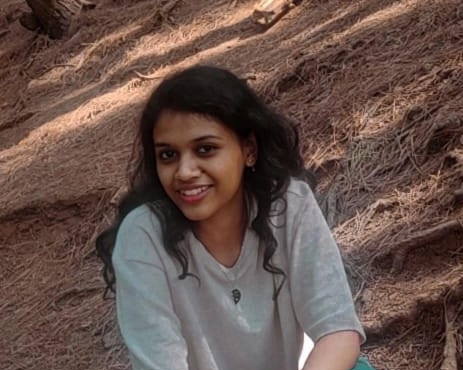
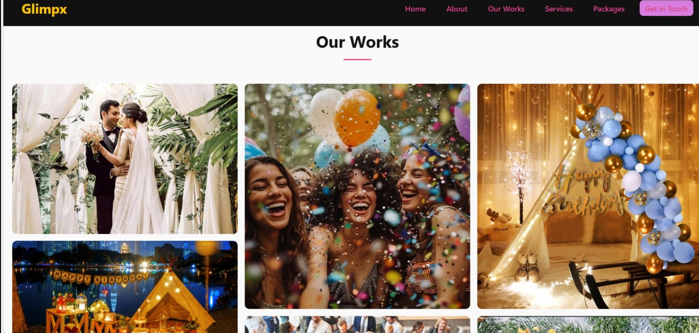

Fresher | Currently Pursuing Bachelor of Technology in Computer Science

📧 annetjoy13@gmail.com
📞 8606858532
Hello! I'm Annet Joy, currently pursuing a Bachelor of Technology in Computer Science at Sahrdaya College of Engineering and Technology. I enjoy building web applications and learning new technologies. I'm passionate about creating software solutions that solve real-world problems and continuously improving my programming skills.
Sahrdaya College of Engineering and Technology
2024 - 2028
CGPA : 7.77
Assistive device developed as a Digital System Design mini project to improve the mobility and independence of visually impaired individuals.
Python Hackathon project designed as an e-commerce platform connecting farmers directly with buyers.
Web-based Event Management System developed using Python, HTML, CSS, JavaScript and MySQL for efficient event planning and management.

Email: annetjoy13@gmail.com
Phone: 8606858532
College: Sahrdaya College of Engineering and Technology